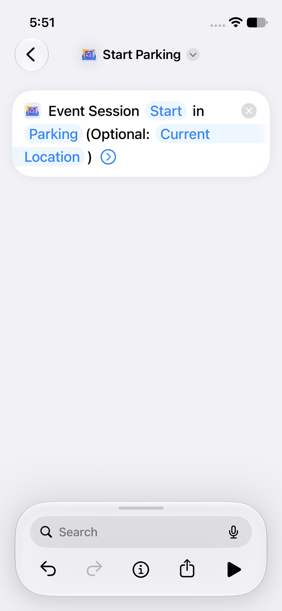
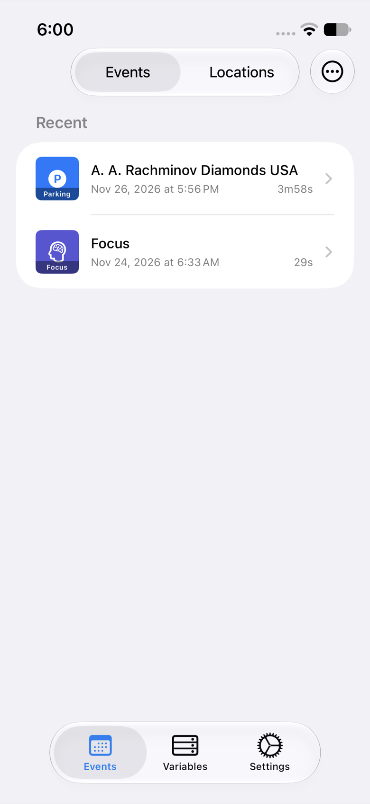
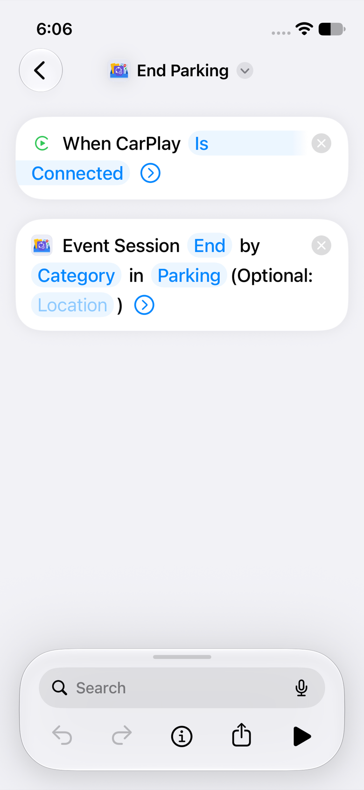

Parking session
What you’ll build
Two shortcuts: Start Parking (Event Session with optional Live Activity) and End Parking. You’ll run them by hand, confirm the session under Events in AnyStash, then attach those same shortcuts to system Automations—for example When CarPlay connects / disconnects (or car Bluetooth if CarPlay isn’t available).
This is a parking Event Session—history in the app, with an optional timed Live Activity on the Lock Screen and Dynamic Island—not only a parked-car pin in Maps, and not a calendar appointment.
Build steps below use Event Session (Live Activity). Imported Add Shortcut links and older screenshots may still show the legacy Start Live Activity name until those assets are re-exported.
Add Shortcut
Or rebuild the same actions below. After you import, the shortcuts are not added to Automations automatically—see Add to an Automation.
Build it yourself
-
In the Shortcuts app, create a new shortcut. Search AnyStash and add Event Session (Live Activity).

Add Event Session (Live Activity) from AnyStash (screenshot may show the older Start Live Activity label until refreshed) -
Configure the action (parking essentials first):
- Phase: Start
- Category: Parking
-
Location (pick one)—core for parking:
- Recommended: set the optional Location parameter to Shortcuts’ Current Location (system variable). Does not require AnyStash location permission.
- Or turn on Use Current Location (If Already Allowed). Shortcuts never shows a permission dialog—AnyStash must already have Location (When In Use) (AnyStash → Settings → Permissions, or grant in the app). If access is missing, the action still succeeds but skips location.
- Everything else: leave the defaults. Show Live Activity is On by default. For other fields (timer, reminder, when the Island is full, ending by a specific session), see Parameter guide below.

Phase Start; Category Parking; Location = Current Location (or Use Current Location); Show Live Activity On; other fields left at defaults -
Create a second shortcut named like End Parking: add Event Session (Live Activity) again, set Phase to End. For parking, leave End By as Category and Category as Parking (do not run it yet). That ends the session and dismisses a linked Live Activity. To end one specific session from a prior action’s result, see Parameter guide → End.

End Parking — Event Session (Live Activity), Phase End (screenshot may still show Stop Live Activity until refreshed)
Parameter guide
Parking works with the essentials above. Open a section only when you need that field—defaults are fine for most automations.
Start — Show Live Activity, timer, reminder
- Show Live Activity (default On): request Lock Screen / Dynamic Island. Off = session only. In automations, Island display is best-effort; the session can still save if the Island cannot appear (unless Fail when full—below).
- Timer Mode: Count Up (default) or Countdown. Countdown needs Planned Duration.
- Planned Duration: optional length (max 12 hours). Sets reminder due time and countdown end. Does not auto-end the session or Island.
- Reminder: Off, at due time, or minutes before. Needs Planned Duration. Stays scheduled if you only dismiss the Island; ending the session cancels it.
- Title / Subtitle / Notes: optional labels for Island and Events history.
Start — If Live Activity Limit Reached
iOS limits how many Live Activities one app can show at once (about five Islands—Apple’s system cap, not an AnyStash quota). When that cap is already reached, this setting chooses what happens to the Island display—it does not end other Event Sessions.
- Smart (default): free a slot (elapsed first, then oldest), then show the new Island.
- End Oldest: end the oldest Island, then show the new one.
- Elapsed Only: only free Islands past their planned due time; if none, continue without a new Island (session can still save).
- Fail: don’t free a slot; the whole Start fails (no new session).
Start — one session vs several in a category
- Active Per Category: Single Active (default) or Allow Multiple (Pro).
- If Category Already Active (Single Active): Auto Close Previous (default) or Fail.
End — End By Category vs Event Session
- End By → Category (typical for Parking): pick Category = Parking (and policies if several actives match).
- End By → Event Session: pass the Event Session from a previous Get / Start result (preferred). Leave Session ID (Legacy) empty unless an old shortcut still passes a UUID string.
- If None Active: Skip (default) or Fail. If Multiple Active: Fail (default), or pick Latest / Earliest / All—use when ending by Category and matches are ambiguous.
Phase — Start, End, Checkpoint
Phase defaults to Start. For a log-only check-in style action, set Checkpoint explicitly—do not rely on an old shortcut that left Phase unset.
Still using the older, deprecated Start Live Activity / Stop Live Activity actions? See Support → legacy Live Activity (they still work; prefer Event Session for new shortcuts).
Try it
Run the shortcuts you built (or imported). Confirm the Event Session under Events; with Show Live Activity On, also confirm the Island—not while configuring parameters above.
-
Run Start Parking. Confirm an in-progress Parking row under Events. With Show Live Activity On, also confirm the Live Activity on the Lock Screen or Dynamic Island (timer / title). If the Island cannot appear, the session can still succeed—check Events.

Parking Live Activity after start (Lock Screen / Dynamic Island) -
Run End Parking. The Event Session should end in Events; a linked Live Activity should dismiss with it.
View in the app
AnyStash is for reviewing what Shortcuts already created—you do not need to start or build the session inside the app for this example.
-
After Start Parking, open AnyStash → Events and open the in-progress Parking session.

Events — view in-progress Parking session -
After End Parking, return to Events and open the finished session in history.

Events — view finished session
Optional later: Shortcuts can also Check In a location onto a session—see Concepts. This guide does not cover creating sessions from the app UI.
Add to an Automation
Real parking flows usually start or stop without opening Shortcuts by hand. A common pair: When CarPlay connects → Start Parking; When CarPlay disconnects → End Parking. If your car doesn’t support CarPlay, use Bluetooth connects / disconnects the same way.
Important: Sharing or importing a shortcut only adds it to your Shortcuts library. iOS does not create an Automation for you. Open Shortcuts → Automation and create personal Automations yourself. You can Run Shortcut (your imported or newly built Start/End Parking) or add AnyStash’s Event Session (Live Activity) action directly (Phase Start / End).
-
In Shortcuts, open the Automation tab → New Automation.

New personal Automation -
Pick a trigger—recommended: CarPlay (you’ll use connects for one Automation and disconnects for the other). No CarPlay? Use car Bluetooth connects / disconnects instead. Triggers vary by iOS version and permissions.
-
Create two Automations and add what should run:
- When CarPlay connects → start parking
- When CarPlay disconnects → end parking
For each one, either:
- Add Run Shortcut, then pick the Start Parking or End Parking shortcut you just imported or built; or
- Skip the wrapper and add AnyStash’s Event Session (Live Activity) directly—Phase Start or End—with the same settings as in Build it yourself (for example Category = Parking, Show Live Activity On for Start).
Without CarPlay, map the same pairing to Bluetooth connects → start and Bluetooth disconnects → end.

When CarPlay connects → Run Shortcut → Start Parking 
When CarPlay disconnects → Run Shortcut → End Parking Why “Run Shortcut”?
When you first create an Automation, iOS may offer use an existing shortcut. After it’s created, that picker isn’t available the same way—to attach a library shortcut, use Add Action → Run Shortcut, then choose yours. AnyStash Event Session (Live Activity) can still be added directly. Screenshots follow this edit path.
-
Optionally turn off “Ask Before Running” if iOS allows it for that trigger. If the Automation does not fire (permissions, CarPlay, or Bluetooth), you can still run the same shortcuts manually.
Next
- Concepts — Live Activity vs Event Session, Free daily limits
- Global variables example — stash a focus tag across shortcuts
- All examples
References
- Add automations to Shortcuts on iPhone or iPad — Apple Shortcuts User Guide